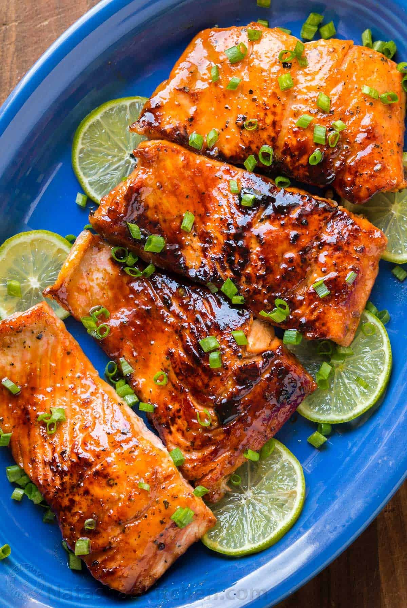

For this recipe you'll be making a delicious honey glazed salmon that the whole family will enjoy!
This is a simple recipe that will only take 30 mins.
The honey and soy sauce marinade that we use to cover the fish gives it a beautiful crust when pan seared.